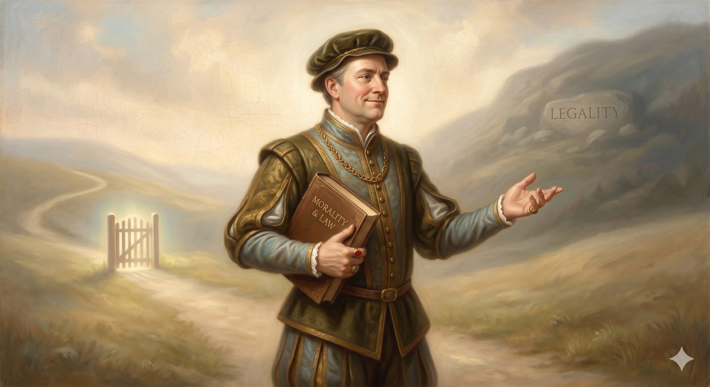

Mr. Worldly Wiseman
The respectable detour that bypasses the Cross — and the two very different ways to be your own savior.
"Having begun by the Spirit, are you now being perfected by the flesh?" Galatians 3:3 (ESV)
While the pilgrim is still struggling under his burden, a confident, respectable gentleman comes alongside him. His name is Mr. Worldly Wiseman, and his advice sounds like wisdom. Why carry that weight, he asks, and why walk such a hard and narrow road? There is an easier way. In the nearby town of Morality lives a man named Legality, who can relieve any burden. Just turn off here — the village is close, the path is smooth — and get respectable.
It is the most reasonable-sounding detour on the whole journey. And it leads away from the gate entirely. This is the strange thing the road teaches early: the most dangerous turn is not the obvious sin. It is the religious-looking shortcut that bypasses the Cross while looking like progress.
Part OneTwo ways to be your own savior
We usually imagine there are two kinds of people: the bad and the good — those who break the rules and those who keep them. The gospel sees something stranger. There are two ways to be your own savior, and keeping the rules is one of them.
The first way is obvious: run from God, break the rules, build your life around yourself. The second is the one Mr. Worldly Wiseman sells: keep the rules, get respectable, and build your life around your own goodness. Both are strategies for staying in control. Both make you the one who secures your standing — one by defiance, the other by performance. The second is more dangerous precisely because it looks like the solution. A person running from God at least knows they are far off. A person standing on their own record may never feel the need of rescue at all.
Jesus told a story that puts the two side by side. A younger son takes his inheritance and squanders it in a far country — the obvious rebel. An older son stays home, works the land, and never disobeys an order — the model of respectability. And at the end of the story, it is the younger son who is inside at the feast, and the older son standing out in the dark, unable to go in. He has done everything right and is further from his father's heart than the brother who wrecked his life.
📖 The Scripture behind this Entailedwhat’s this?›
The claim: There are two ways to be one’s own savior — open rebellion and respectable rule-keeping — and self-righteousness can leave a person further from God than open sin.
- Luke 15:28–30 (ESV) — “But he was angry and refused to go in … ‘Look, these many years I have served you, and I never disobeyed your command, yet you never gave me a young goat.’”The obedient elder son ends outside the feast, his service framed as unpaid wages.
- Luke 18:9–14 (ESV) — “The Pharisee … ‘God, I thank you that I am not like other men.’ … But the tax collector … went down to his house justified, rather than the other.”The morally scrupulous man goes home unjustified; the confessed sinner justified.
- Matthew 21:31 (ESV) — “The tax collectors and the prostitutes go into the kingdom of God before you.”Christ tells the religiously respectable that open sinners enter ahead of them.
The inference is drawn from comparing several of Jesus’ own stories; the conclusion is their joint entailment, shown rather than assumed.
Part TwoThe elder brother's mistake
The older brother's problem is not his obedience. Obedience is good; the road will have much to say in its favor later on. His problem is what his obedience had quietly become. Listen to him argue with his father: all these years I have served you, and I never disobeyed your command, yet you never gave me a young goat. Every word is the language of wages. He has not been living as a son in his father's house. He has been working as a hired hand, running a tab, expecting a payout — and grace for his undeserving brother feels, to him, like being cheated.
He has confused earned approval with received love. He believed his good behavior was building up credit with his father, and the whole time the father's love was never for sale. Son, you are always with me, and all that is mine is yours. It had been a gift all along. The tragedy of the elder brother is that he stood inside the inheritance and experienced it as a workplace.
In plain terms
You can do all the right things and still miss God entirely — not by failing the rules, but by using them. Church attendance, clean living, careful theology: all good, and all easy to turn into a résumé you hand God in exchange for his approval.
The test is in how it feels. If your spiritual life runs on score-keeping — if every failure triggers a tally and grace shown to "worse" people quietly galls you — the rules may have become a wall between you and the very God they were meant to bring you near.
Part ThreeThe exhausting wall
This is why the smooth path to Morality is so cruel: it never arrives. The person who builds their standing on their own performance can never rest, because the question have I done enough? has no final answer. Their prayer life becomes a status report. Their failures produce not just sorrow but panic. The joy they have been told is their strength is, most of the time, simply missing — and they cannot say why, because on paper everything is in order.
Paul put the question bluntly to people drifting down this road: having begun by the Spirit, are you now being perfected by the flesh? Did you start this life by grace only to try to finish it by effort? The same voice that called them home was the only voice that could keep them there. The wall they were building, brick by careful brick, was sealing them out of the house.
📖 The Scripture behind this Directwhat’s this?›
The claim: Salvation cannot be completed by law-keeping or moral effort; what begins by grace through the Spirit is not perfected by the flesh.
- Galatians 3:3 (ESV) — “Are you so foolish? Having begun by the Spirit, are you now being perfected by the flesh?”Paul rebukes the very attempt to finish by effort what grace began.
- Romans 3:20 (ESV) — “For by works of the law no human being will be justified in his sight.”Justification is explicitly denied to law-keeping.
- Titus 3:5 (ESV) — “he saved us, not because of works done by us in righteousness, but according to his own mercy.”Salvation is grounded in mercy, not in our righteous works.
Stated directly in Scripture; the Reformers recovered this teaching but did not invent it.
There are two ways to be your own savior. The Cross undoes them both.
The good news Mr. Worldly Wiseman cannot offer is that the burden was never meant to be relieved in the town of Morality. It rolls off in one place only, and that place is still ahead, past the gate. Come to me, all who labor and are heavy laden, and I will give you rest. The way to lay the weight down is not to get respectable. It is to keep walking to the One who carries it for you. But there is a gate to go through first — and going through it means admitting you cannot make it on your own.